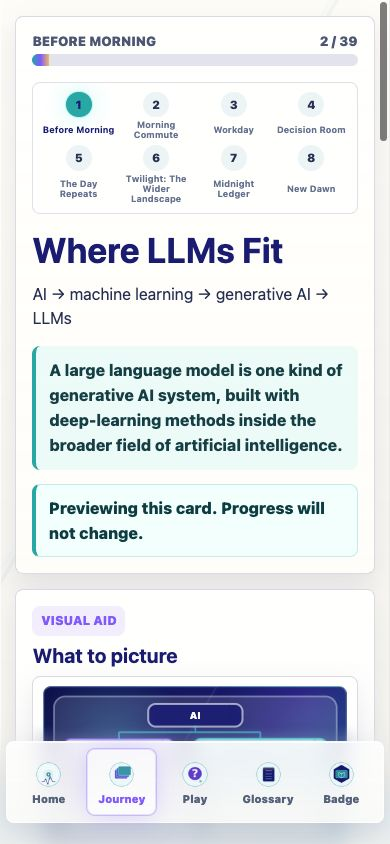
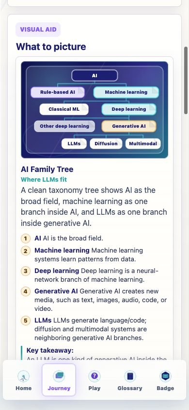
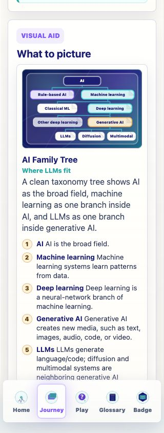
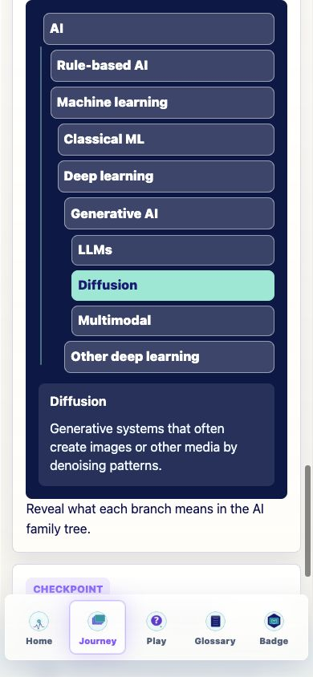
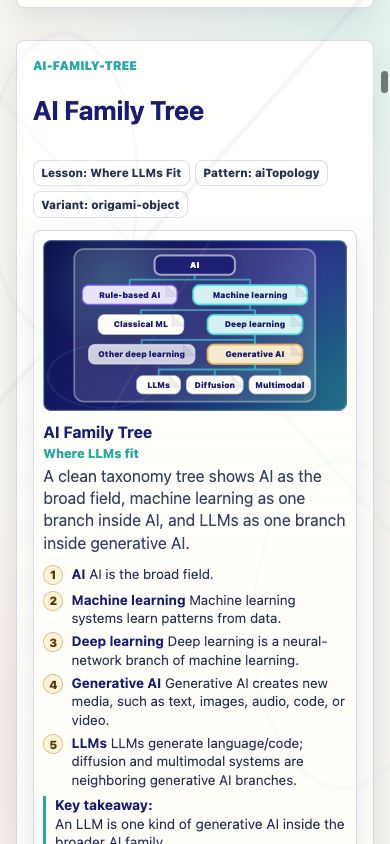

Prompt Life v0.18.1
Where LLMs Fit Visual Repair
Focused repair pass for the AI family-tree visual. The folded topology map is now a clean coded taxonomy tree so learners can see that LLMs are one branch of generative AI inside the broader AI family.
What Changed
Visual Layout
Chose a clean vertical taxonomy tree because it was more readable than nested boxes at 320px and 390px.
Hierarchy
The diagram now shows AI to Machine learning to Deep learning to Generative AI to LLMs, with diffusion and multimodal as neighboring branches.
Labels
Removed compressed labels like ML, Gen AI, Multi, and Other DL. Classical ML remains as the allowed short label.
Interaction
The tiny interaction is still tap-through, but now the hierarchy stays visible while the selected branch highlights and the explanation changes.
Files Changed
src/components/DiagramKit.tsxsrc/components/VisualAids.tsxsrc/main.tsxsrc/styles/global.cssdocs/REVIEW_NOTES.mddocs/design/DIAGRAM_KIT_V0_18.mddocs/stage-audits/v0-17-before-morning/DIAGRAM_KIT_REFACTOR_V0_18.mddocs/stage-audits/v0-17-before-morning/WHERE_LLMS_FIT_VISUAL_REPAIR_V0_18_1.mddocs/stage-audits/v0-17-before-morning/screenshot-index.md- Report screenshots under
docs/stage-audits/v0-17-before-morning/screenshots/
Verification
typecheck passed build passed build:pages passed audit:answers passed browser QA passed
npm run typecheck: passed.npm run build: passed with the existing Vite large-chunk warning.npm run build:pages: passed with the existing Vite large-chunk warning.npm run audit:answers: passed; 68 surfaces audited, 46 randomized, 22 fixed-order exclusions.- Live browser QA: no console errors in a clean tab; no horizontal overflow at 320px; all ten interaction nodes visible and tappable.
Known Issues
- The existing Vite large-chunk warning remains.
- The live mobile bottom navigation can cover the very bottom of long lesson content, but it does not obscure the repaired taxonomy diagram.
- No generated PNG was added for
ai-family-tree; this card remains coded SVG/HTML.
Next Three Recommended Steps
- Add a tiny regression check for
ai-family-treelabel presence, no process-number seals, and no horizontal overflow at 320px. - Audit other coded visuals for similar “looks readable but teaches vaguely” problems.
- After this taxonomy repair is stable on iPhone, continue the planned Image 2 asset generation for cards that actually need textless art.
Screenshots




